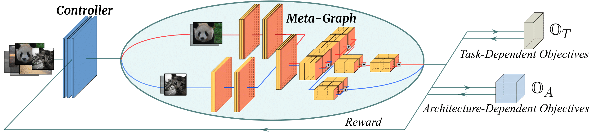

InstaNAS: Instance-aware Neural Architecture Search
(Under Review) | ICML'19 AutoML Workshop
An-Chieh Cheng* Chieh Hubert Lin* Da-Cheng Juan Wei Wei Min Sun
National Tsing Hua University Google AI
Paper (Arxiv) | Code (to be released soon)
▲ The concept of InstaNAS is to search for a
Abstract
Neural Architecture Search (NAS) aims at finding one “single” architecture that achieves the best accuracy for a given task such as image recognition. In this paper, we study the instance-level variation, and demonstrate that instance-awareness is an important yet currently missing component of NAS. Based on this observation, we propose InstaNAS for searching toward instance-level architectures; the controller is trained to search and form a “distribution of architectures” instead of a single final architecture. Then during the inference phase, the controller selects an architecture from the distribution, tailored for each unseen image to achieve both high accuracy and short latency. The experimental results show that InstaNAS reduces the inference latency without compromising classification accuracy. On average, InstaNAS achieves 48.9% latency reduction on CIFAR-10 and 40.2% latency reduction on CIFAR-100 with respect to MobileNetV2 architecture.
Paper
arxiv, 2019.
Code
Citation
@article{anchieh2018instanas,
title={InstaNAS: Instance-aware Neural Architecture Search},
author={An-Chieh Cheng*, Chieh Hubert Lin*, Da-Cheng Juan, Wei Wei, Min Sun},
journal={arXiv preprint arXiv:1811.10201},
year={2018}
}
Overview of the Method

OuO
Live Demo
We deployed one of the ImageNet controller on your browser (with onnx.js)! You may select some of the ImageNet testing samples below and see what architectures are selected by the controller. You may also upload your own testing samples. Enjoy!
Try with your sample!

Acknowledgement
OuO

{kind=link}
{kind=link}
{kind=link}